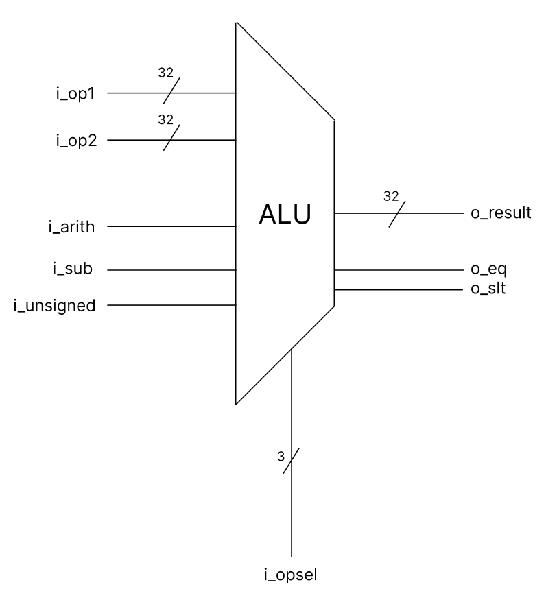
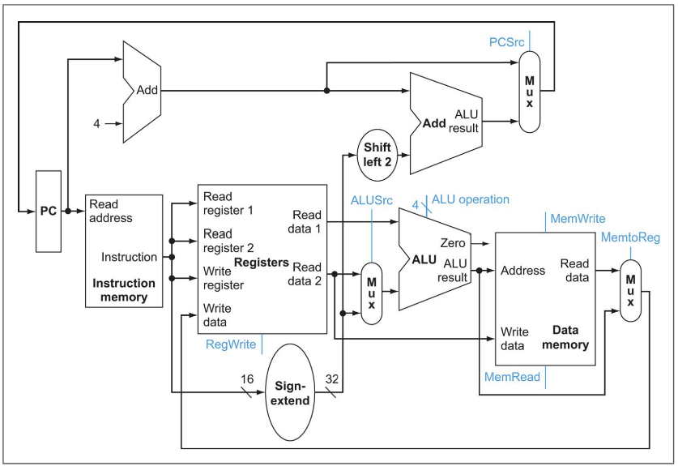
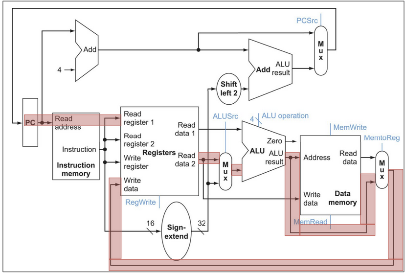

Project 3: Single-Cycle Processor
UW—Madison ECE 552: Fall 2026
Project Introduction
In this project phase, you will create a fully functional single-cycle processor implementing the RISC-V RV32I ISA.
Implementations must be created using Verilog; SystemVerilog will not be allowed and will result in a grade of 0 for Problem 2 if used. This assignment is designed to be completed in a group of 2-3. Collaboration between groups is not permitted. IMPORTANT: Make your final submissions in your groups on Gradescope. If you do not, the teaching staff will have to do this manually.
Generative artificial intelligence (e.g. ChatGPT) is permitted for this assignment; however, LLMs generally struggle with this type of hardware design work, and overly relying on them may make this project phase and subsequent phases significantly harder to complete.
This project will be worth 10% of your final course grade. The automated tests on Gradescope comprise the majority of the points. The schematic is worth a fair portion.
All material is available in the Project 3 repository on GitHub. You can clone the repository locally or on a CSL machine.
If there are any issues with Gradescope or the files provided, please post on Piazza rather than emailing. If you are having difficulty with this project, office hours are held several times a week where assistance is available.
Good luck!
Problem 1: Schematic
Before writing a single line of code, you must complete a schematic representing the data and control paths of your processor. You must use graphic design software, e.g. Figma (web-based), MS paint (convenient for windows machines), draw.io (web-based), inkscape (available on CAE Linux machines), etc., to create this schematic. It is recommended to create your schematic in the following order:
Full data path of processor, including but not limited to
- Functional modules such as the arithmetic logic unit (ALU), register file, instruction decoder, program counter (PC) register, etc.
- Multiplexers for selection logic for ALU operands, write back data, register selection, etc.
- Any other logic required (CLAs, zero/sign extenders, etc.)
Full control path of processor (outputs from instruction decoder), including but not limited to
- ALU signal operand logic
- Memory address selection
- Write back selection
- Branch handling
Note: not all the components required have been described; fill in your schematic with the details of your implementation. Also, you are not required to draw boundaries between pipeline stages but it is recommended (you'll need to do this in the next project).
Additional Requirements
- Show the bit-width of each signal in your processor (e.g. instructions fetched produce a 32-bit ([31:0]) signal).
- Differentiate between combinational (stateless) and sequential (flip-flop) logic by drawing a small triangle at the bottom of any sequential logic modules (PC, RF, etc.)
- For each instruction type, trace the execution path of a sample instruction in a bright color. For example, for R-type instructions, which modules are required?
For assistance completing this problem, please consult the textbook. Your schematic should resemble the one from the textbook, but you must determine which logic and control signals are required for your implementation.
IMPORTANT: The textbook schematic is just a starting point; you are supposed to determine which signals you need and where they go.
The simulator mentioned in Problem 2 may also help you with this problem.
Your final schematic must reflect any changes made when implementing your processor in Verilog in Problem 2.
You are required to submit one schematic.pdf, and one {x}_type_schematic.pdf for each x in {r, i, s, b, u, j} that traces the data path of the respective instruction type.
Here is an example of what the ALU might look like in your design. Please note that this will need to be connected to other modules.

Here is an example of a schematic taken from the textbook. Please note that this is a very simplified version of the schematic you will be making, and is also for a different processor than the one you will be making.

Here is an example of how the instruction type tracing should look.

Please note that you do not have to include the retire interface signals (o_retire_*) provided in hart.v in your schematic, more on that in the FAQ section.
Problem 2: Processor Implementation
Please implement a single-cycle processor that implements the RISC-V RV32I ISA. You will be graded proportionally to the number of tests that you pass.
Resources
The RISCV-32I specification document is the primary document to reference how instructions are implemented.
The reference sheet is helpful when writing programs or as a quick reference.
You may find this simulator helpful for visualizing how your processor should execute, and for verifying functional correctness and performance.
Using this decoder to assemble RISC-V instructions is also recommended for testing and examining instructions when debugging.
Local Testing
To run code on your own processor, set your directory up as follows (this is how the git repo is configured by default):
tb/ -> testbench directory; where program.mem is written to
rtl/ -> your implementation code (all in same directory, no subdirectories)
tests/asm/ -> assembly tests with .asm extension go here
traces/ -> trace output can be placed here
Take a look at RV32I programs under the tests/asm directory. The ebreak instruction is used to halt the processor. You will also implement the ebreak instruction in this project. Not implementing it will cause the testbench to enter an infinite loop. See the Reference Materials page for more details.
To assemble a RV32I program, pull (or update) the docker container:
docker pull coderkalyan/ece552-tools:latest
cd tests/asm/
Run the following command to assemble the program 01add.asm under tests/asm/ directory. Change 01add to the name of the program you’d like to assemble.
make PROGRAM=01add
Then run your tb.v (using Icarus, Modelsim, etc.) and inspect the trace generated to make sure your processor works as expected. Repeat the process for all the tests provided, and write your own. Example for running tb in Icarus (exact command may vary depending on your directory structure):
cd tb
iverilog ../rtl/*.v tb.v
./a.out # can also redirect to a file with >
In addition to the provided tests, you are also encouraged to write your own tests to test as exhaustively as possible. Only a few of the tests being run on Gradescope are provided here; in future project phases, access will be granted to the rest.
NOTE: it is recommended to divide the CPU into modules by pipeline stage (fetch, decode, execute, memory, writeback); this may make subsequent projects easier but is not required for this project. For more details, read the textbook.
Gradescope
Submit your code to Gradescope as often as desired to verify your processor. Verilog coding rules are enforced for this project. A centralized list of these rules can be found here. The rule-checking script will run every time the processor is submitted, first checking for compiler errors, then disallowed constructs. Once a submission passes the rules check, a trace comparison will be performed between the submitted processor and the reference implementation. You can run the exact same checker locally before submitting -- ece552 validate -w *.v -- see the starter repository's python-ece552/README.md for setup.
Additional Notes (Frequently Asked Questions/FAQs)
Do not use Gradescope as your main debugging interface. Debug your processor locally using Modelsim or Icarus. Icarus is used for grading, which is generally less strict than Modelsim.
Provided Modules
Do not modify the hart interface.
If you modify the testbench, make sure that you do not change anything that would cause your processor to give a different output. This testbench is used on Gradescope to compare a reference implementation to yours, so if you change the testbench significantly, the results you get on Gradescope may differ from what you get locally. Do not submit tb.v to Gradescope as this will cause a compilation error.
You may modify the ALU, register file, and immediate decoder interfaces in any way you would like, but this is not necessary and may make it more difficult for the teaching staff to provide assistance. You must disable register file bypassing when you instantiate the register file in your processor (BYPASS_EN = 0).
You should not make a memory module in your processor as both the instruction and data memories are instantiated in the tb, accessible via the hart interface.
Infinite Loops
The minimum timeout that can be set on Gradescope is 10 minutes. If you enter an infinite loop for some reason, you will not be able to resubmit for 10 minutes. If your code is working locally but not on Gradescope, check to make sure that you are using the most up to date testbench.
If you enter an infinite loop, it is likely that one of the following has occurred:
- Your
ebreakinstruction does not halt the processor correctly, causing the processor to spin wait indefinitely. - Something is off with your
next_pclogic; the next instruction is never fetched and thus the processor spin waits indefinitely. - You have other errors that prevent your processor from executing correctly (e.g. a jump or branch instruction goes to the wrong place, causing your processor to get stuck in an infinite loop)
- You exceeded the max recursion depth for module instantiation in Icarus. This is a very rare bug that has only been observed once, during a previous semester's final project phase. If your processor is working locally with the most up to date testbench, but still spins indefinitely on Gradescope, email the teaching staff directly.
Assembly Tests
The first few assembly tests used to test your processor on Gradescope are provided here. You will receive access to the rest of the tests starting in Project 4. Some assembly tests contain pseudo ops (like li, etc.) which compile to standard RISCV-32I instructions.
You can debug instructions that are not in the provided tests by creating your own tests using those instructions. When creating your own tests, make sure to end the assembly code with ebreak or your processor will not halt.
You must build the tests into program.mem and make sure program.mem is in the same directory as your tb.v in order to run the test properly.
Retire Interface
You may notice that there are several signals provided in the interface for hart.v that start with the prefix o_retire. These signals are used by tb.v to understand which instructions your processor is executing, and in what order. Each cycle that o_retire_valid is asserted, the testbench will assume that an instruction was completed (and look for which instruction by reading the other o_retire_* signals), and print a new line in the trace output. For project 3, your single cycle processor should assert o_retire_valid every cycle.
From the interface:
// The output `retire` interface is used to signal to the testbench that
// the CPU has completed and retired an instruction. A single cycle
// implementation will assert this every cycle; however, a pipelined
// implementation that needs to stall (due to internal hazards or waiting
// on memory accesses) will not assert the signal on cycles where the
// instruction in the writeback stage is not retiring.
//
// Asserted when an instruction is being retired this cycle. If this is
// not asserted, the other retire signals are ignored and may be left invalid.
output wire o_retire_valid,
// The 32 bit instruction word of the instrution being retired. This
// should be the unmodified instruction word fetched from instruction
// memory.
output wire [31:0] o_retire_inst,
// Asserted if the instruction produced a trap, due to an illegal
// instruction, unaligned data memory access, or unaligned instruction
// address on a taken branch or jump.
output wire o_retire_trap,
// Asserted if the instruction is an `ebreak` instruction used to halt the
// processor. This is used for debugging and testing purposes to end
// a program.
output wire o_retire_halt,
// The first register address read by the instruction being retired. If
// the instruction does not read from a register (like `lui`), this
// should be 5'd0.
output wire [ 4:0] o_retire_rs1_raddr,
// The second register address read by the instruction being retired. If
// the instruction does not read from a second register (like `addi`), this
// should be 5'd0.
output wire [ 4:0] o_retire_rs2_raddr,
// The first source register data read from the register file (in the
// decode stage) for the instruction being retired. If rs1 is 5'd0, this
// should also be 32'd0.
output wire [31:0] o_retire_rs1_rdata,
// The second source register data read from the register file (in the
// decode stage) for the instruction being retired. If rs2 is 5'd0, this
// should also be 32'd0.
output wire [31:0] o_retire_rs2_rdata,
// The destination register address written by the instruction being
// retired. If the instruction does not write to a register (like `sw`),
// this should be 5'd0.
output wire [ 4:0] o_retire_rd_waddr,
// The destination register data written to the register file in the
// writeback stage by this instruction. If rd is 5'd0, this field is
// ignored and can be treated as a don't care.
output wire [31:0] o_retire_rd_wdata,
// The current program counter of the instruction being retired - i.e.
// the instruction memory address that the instruction was fetched from.
output wire [31:0] o_retire_pc,
// the next program counter after the instruction is retired. For most
// instructions, this is `o_retire_pc + 4`, but must be the branch or jump
// target for *taken* branches and jumps.
output wire [31:0] o_retire_next_pc
In future project phases, the trace output of your program will be almost identical to this project, but how the signals are asserted will need to change.
Submission Instructions
Submit the following files to the appropriate Gradescope assignment:
| Deliverable | Points | Notes |
|---|---|---|
| schematic.pdf | 10 | Graded manually, after the deadline. See Problem 1. |
| {x}_type_schematic.pdf for each x in {r, i, s, b, u, j} | 10 | Graded manually, after the deadline. See Problem 1. |
| All Verilog files required for your processor to run (no folder hierarchy) |
125 | Autograded. If it is used in your design, include it. See Problem 2. |
project3.txt |
0 | Graded manually, after the deadline. Submission Template [Group Member 1]: Name [Group Member 2]: Name [Group Member 3]: Name |
Filenames must match exactly. Please double check to ensure that you have submitted all of the required files.
This project will be worth 10% of your final course grade. Gradescope will only show your autograded Verilog score immediately -- schematic and free-response points aren't reflected until they're graded manually, after the deadline.